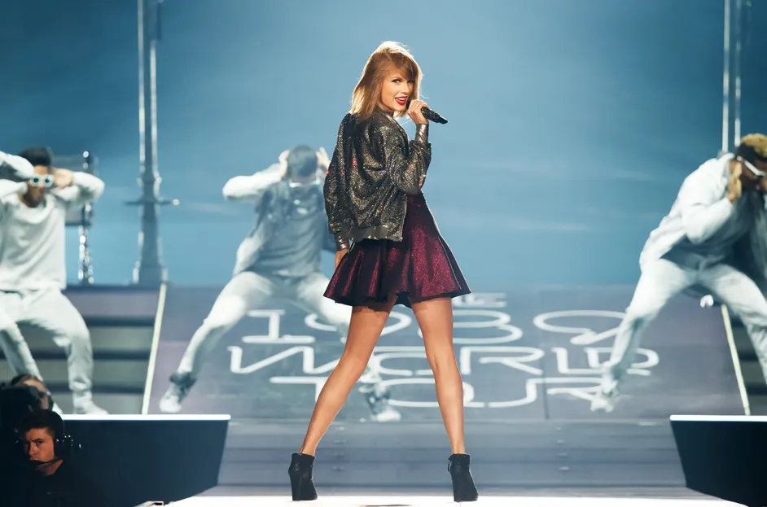
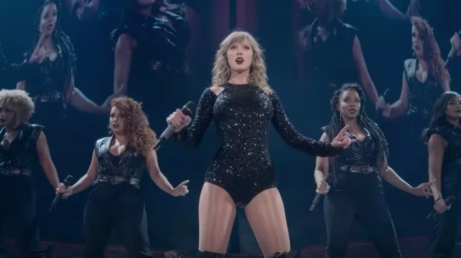
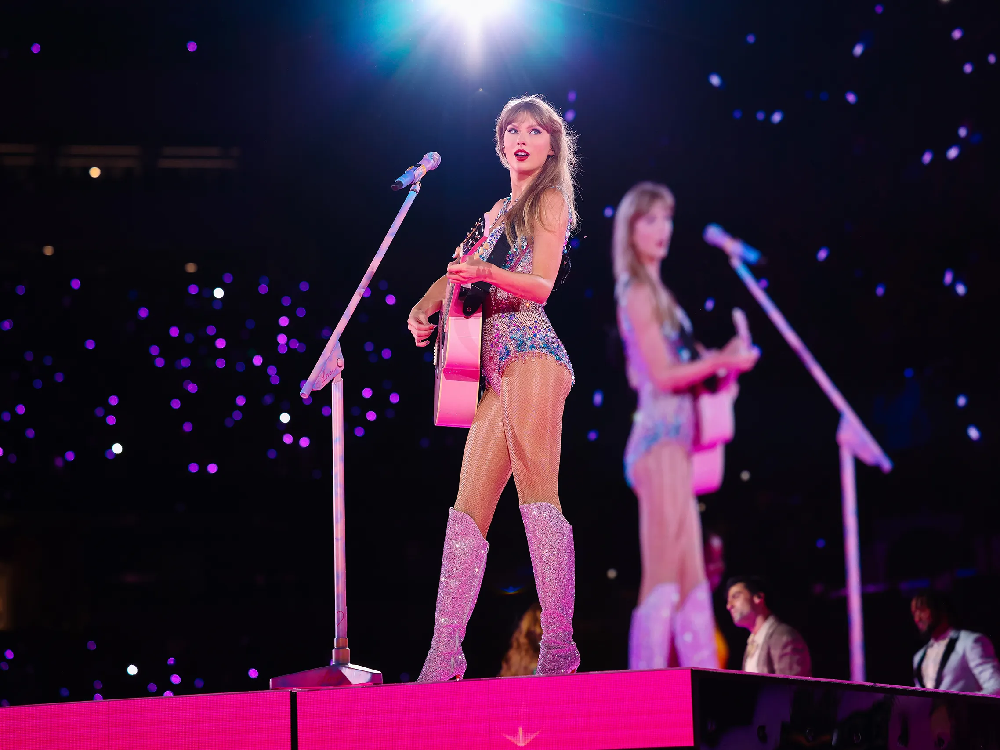

Concerts I've Attended

Speak Now was the first Taylor Swift concert I attended. I went when I was 8 years old, and I actually fell asleep at the end of the concert. Despite falling asleep, I remember how amazing and fun the concert was. The show ended with fireworks, which quickly woke me up.
1989 was such a fun concert for me because I went with my entire family. I remember Shawn Mendes opened for Taylor, which was really cool. This is a true pop-album, so I was dancing during the entire concert.
The Reputation Stadium Tour was my favorite concert I've ever been to (before the Eras Tour). The way she remixed certain songs was so iconic, and her costumes were amazing. I actually saw this concert two nights in a row, and I got floor seats for the second night. I had such a great time both nights!
The Eras Tour is obviously one of the biggest tours ever. This tour has broken countless records and after attending, I can see why. This 3-hour show was non-stop fun. This was one of the most fun nights ever!